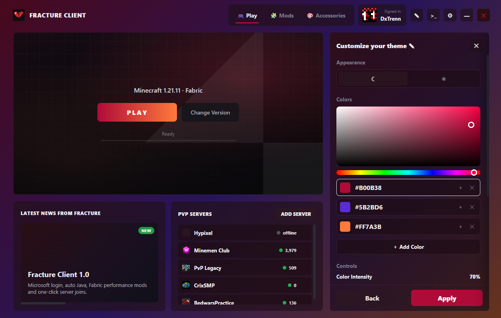
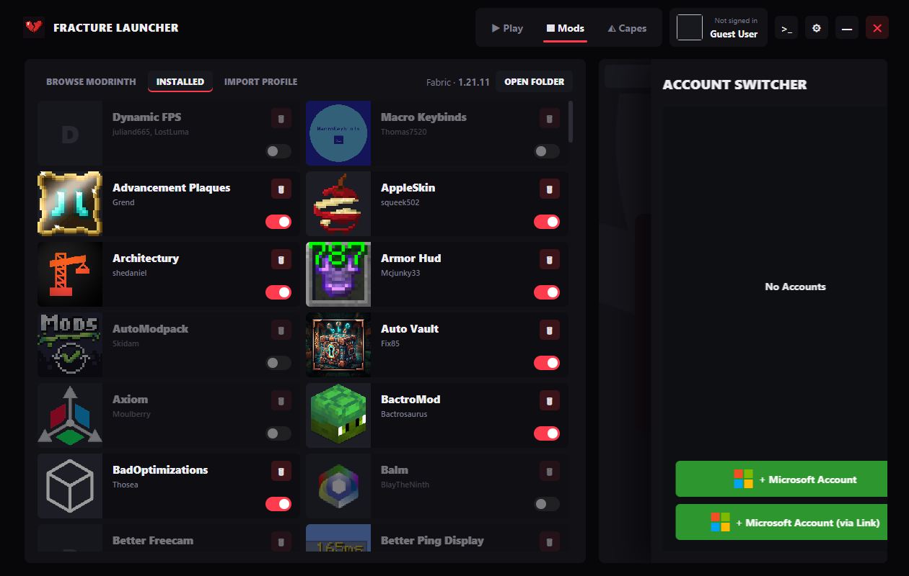
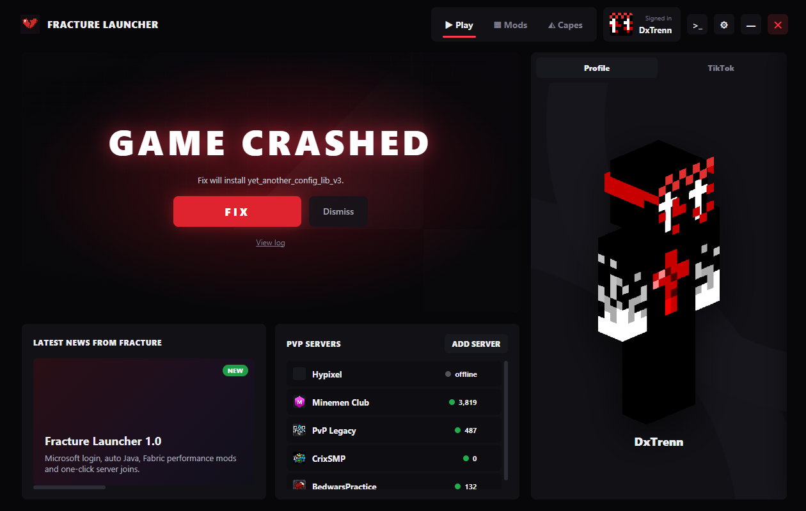

// themes
Make it yours
Pick up to four colors, set the intensity and angle, switch fonts and icons. Every change previews live before you apply it.
The Minecraft PvP launcher that sets itself up. Performance mods, a Modrinth browser and one-click crash fixes, all in one place.
// features
No juggling five apps to play with your mods.
Fabric with Sodium, Lithium, Entity Culling and tuned Java flags installed for you. The right Java downloads automatically.
Search and install mods with their dependencies in one click, or drag .jar files straight in. Every mod shows its icon.
Instead of a wall of errors you get one red FIX button that installs, updates or turns off the right mods.
Separate setups with their own version, mods, resource packs and settings. Duplicate one to experiment safely.
Bring profiles over from Dawn, Feather, Prism, Modrinth App and Lunar, or import a .mrpack.
A skin library you can wear in one click, a skin creator, a NameMC skin finder, and your official capes.
Gradient themes with up to four colors, light or dark mode, fonts and icon styles.
Microsoft login with an account switcher. Sign in with a popup or with a code and QR.
TikTok, Spotify and Instagram next to the play button, each with its own saved login.
// themes
Pick up to four colors, set the intensity and angle, switch fonts and icons. Every change previews live before you apply it.

// mods
Every mod is a card with its icon, authors and an on/off switch. Browse Modrinth without leaving the launcher.

// crash fixer
Missing a dependency or a mod that doesn't belong? Fracture says so in plain words and fixes it with one button.

// install
Three steps, no setup.
Grab Fracture Client Setup.exe from the latest GitHub release.
Windows: if it says "Windows protected your PC", click More info → Run anyway. Mac: drag Fracture Client to Applications, then the first time right-click → Open.
Sign in with your Microsoft account, pick a profile and hit PLAY.
// faq
Quick answers.
Yes, completely free, and the source code is public.
Yes. You log in with the Microsoft account that owns Minecraft Java Edition, the same as the official launcher.
The full code is on GitHub for anyone to check. Windows warns about any app that isn't signed with a paid certificate; click More info → Run anyway.
No. Fracture keeps its own game folder, so your other launchers stay exactly as they are.
Every Minecraft Java release, Vanilla or Fabric, from 1.8.9 to the newest version.
It isn't. macOS says that about apps that aren't notarized by Apple. Move Fracture Client to Applications, open Terminal and run xattr -cr "/Applications/Fracture Client.app", then open it again.
Yes. Download the arm64 .dmg for Apple Silicon Macs (M1 and newer) or the x64 .dmg for Intel Macs. Linux isn't supported yet.